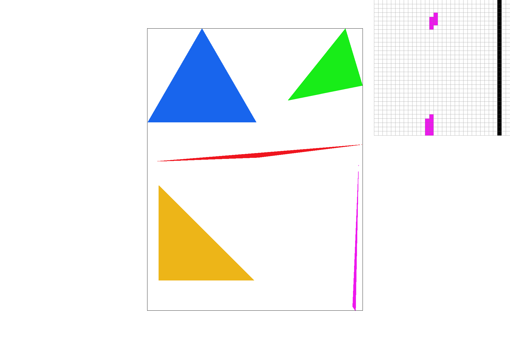
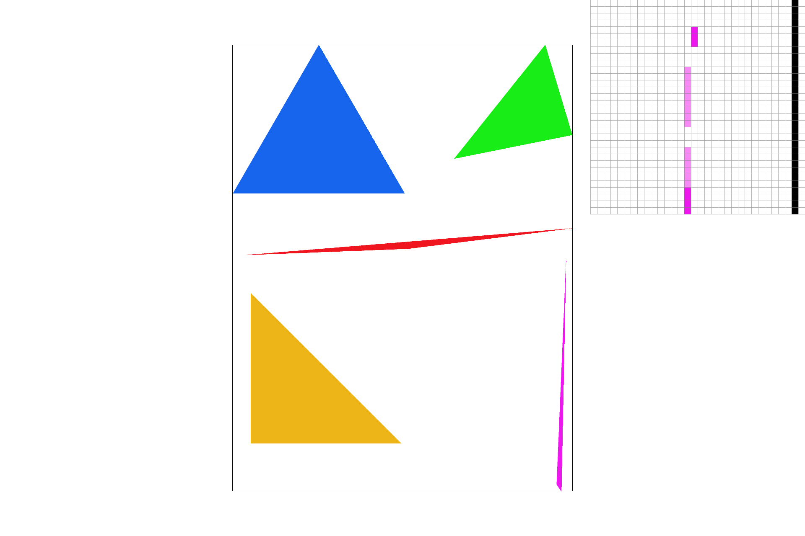
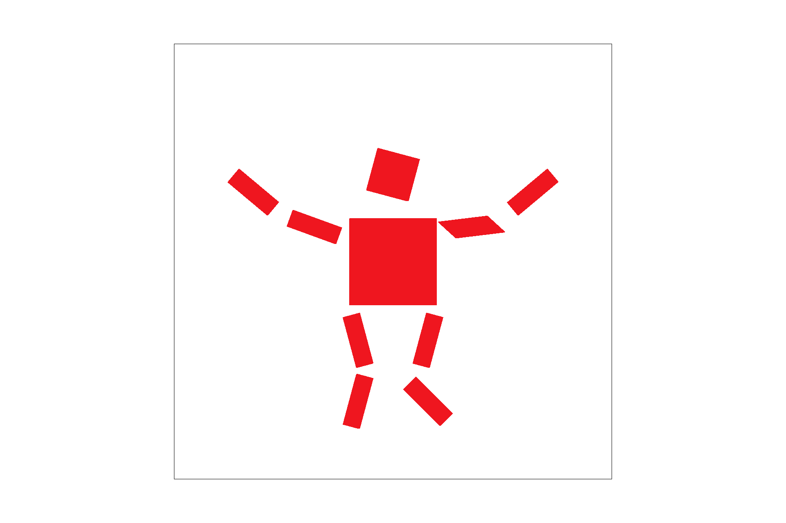
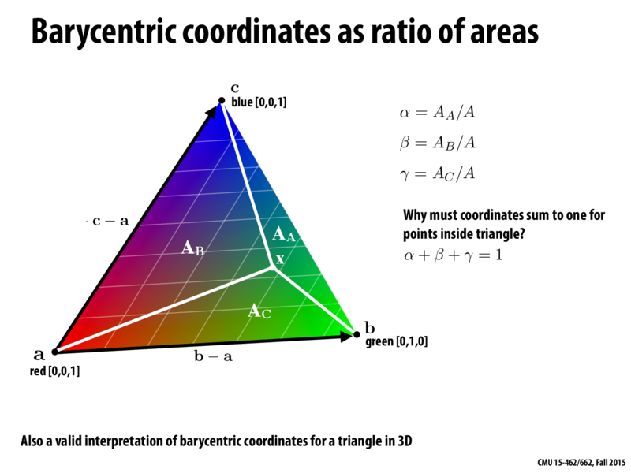
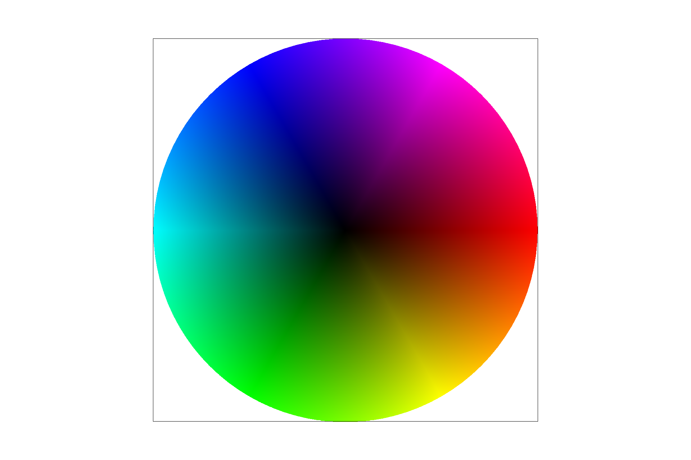
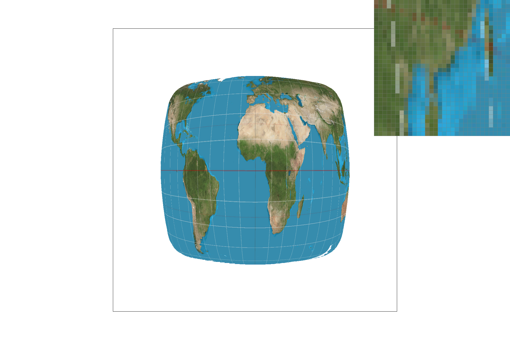
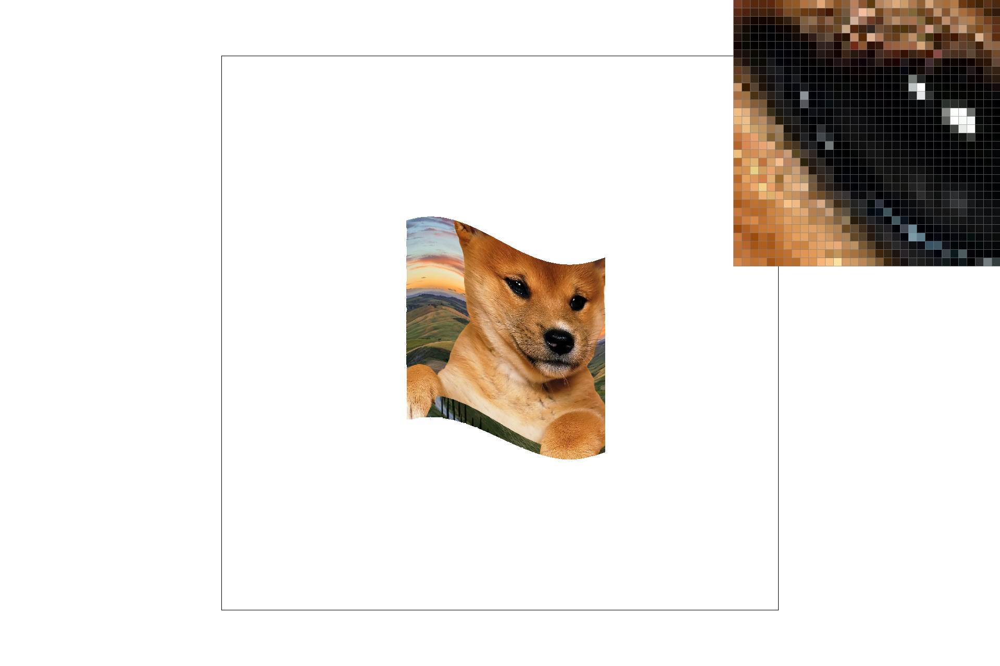
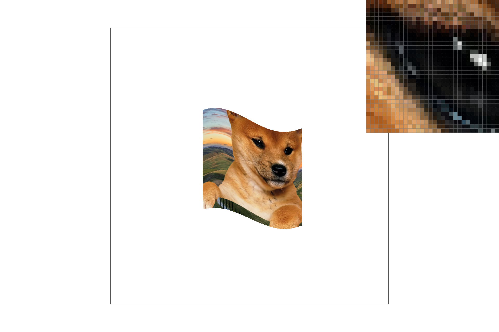
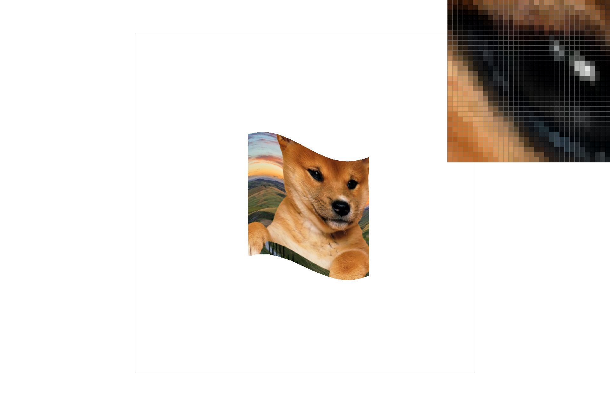

Overview
For this project, I implemented a rasterizer that can render images with various forms of sampling and antialiasing.
The rasterizer can even transform, rotate, scale objects, and work with both svg's with texture maps and png's alone.
It features a 3-line test triangle rasterizer, a barycentric coordinate converter, uv texture mapping, and pixel and level sampling.
We implemented pixel and level sampling up to the degree of featuring trilinear filtering.
This project was really neat to me - we went from stone-cold C++ code to implementing a triangle rasterizer from mathematical concepts in class,
to antialiasing, performing sampling and interpolation - that's crazy. Implementing something like trilinear filtering,
which I have seen extensively in video games, help tied the theoretical concepts of computer graphics to something concrete.
Section I: Rasterization
Part 1: Rasterizing single-color triangles
Rasterizing triangles is a key basic step to computer graphics,
involving the processing of primitive points on an integer grid representing pixels.
To rasterize triangles, we performed a test to determine if one of these points (iterating through many, eventually)
was inside or outside the triangle via a 3-line test. We did this by building on-top of the provided line function,
processing 3 points at a time: p0, p1, p2, and breaking them down into their respective (x,y) coordinates and checking the edges of a triangle.
In my project, I did this by abstracting this process with helper functions: I made a helper function to determine the polarity of a line being either
positive or negative, and then I applied this to all three edges (as a result of having three points). I then did a simple test to check if they are all
positive or all negative, which indicates that a point must be inside the triangle; else, the point may lie on a plane that is intersected by 1 or 2 edges, but not all 3.
If there is a triangle, we feed in the point coordinates of points that are inside the bounding box of the triangle.
It is not possible for this to be worse in runtime or less efficient than an algorithm that checks every sample within the bounding box entirely.
I did a minor optimization (maybe not enough for extra credit), but I swapped the ordering of the x and y pixel loops such that y is processed first.
I noticed that we performed operations such as matrix[y][x] = ... for checks, so I ordered it such that y gets evaluated first
and minorly avoids redundant operations.
|

|
Part 2: Antialiasing triangles
To implement supersampling for AA, I divided each pixel into its subsamples,
via mathematical manipulation of 1 / float((sqrt(sample_rate) * sqrt(sample_rate))
to determine an appropriate amount of subsamples. I then similarly computed a subshifter
that helped me identify each subpixel's center.
I performed the inside-triangle test on these subsamples, summed their RGB values,
and then divided that by the total number of subsamples per sample to return our RGB value of the pixel.
By doing these operations, we are able to create a primitive form of antialiasing
where the jagged edges become smoother and breaks / gaps, such as in our pink triangle,
also become more filled in and pleasing to the eye.
To implement this, I had to heavily modify rasterize_triangle,
which actually helped me catch a bounds bug in my triangle inequality method.
I also had to implement the color summing code to help fill in fragments in the rasterization pipeline.
You can visually see supersampling's effects in the images below.
We apply supersampling to weight subsamples of pixels to create
colors that did not exist in the original image, yet are crucial
to a natural viewer to perceive images as smooth and without jaggies.
In the example of the pink triangle, we can see where the supersampled
pink elements on the jaggies appear to be a far lighter pink,
an effect of the supersampling.

|

|
|
Part 3: Transforms
The inspiration of this dancing cubeman is music. I was sitting in Blue Bottle Coffee, listening to some groovy beats. Headphones on blast, I tuned out the world and tweaked my groovy dancing cubeman to best represent my inner-self. It also used a nice combination of every transformation we implemented.
|

|
Section II: Sampling
Part 4: Barycentric coordinates
Barycentric coordinates allow you to interpolate a color via the weighted distance from three points,
traditionally defined as alpha, beta, and gamma, representing red, green, blue respectively. They are also interestingly affine coordinates.
The weighting occurs as you travel away or towards a coordinate, the color value respectively increases or decreases in ratio.
This is due to a barycentric coordinate needing to sum to 1, e.g.: alpha + beta + gamma = 1, so the other
two respective colors fill in the missing amount. Thus, the result we see is a smoothly blended color triangle.
|

|
This is the color wheel that my rasterizer program created.
|

|
Part 5: "Pixel sampling" for texture mapping
Pixel sampling uses barycentric coordinates to apply a texture map onto an image: a .png in our scenario.
We converted our (x, y) pair points to barycentric coordinates, and then converted everything to uv coordinates in the end.
For the two pixel sampling methods we implemented, nearest neighbors was fairly simple.
In nearest neighbors, you select the closest texel and return the color.
Meanwhile, for bilinear sampling, you take the 4 nearest samples and relationalize them as pixel coordinates. Then, I chose to split their centers via
fractional coefficients to obtain the location of the center of the 4 nearest samples, plus their fractional values to use as weighting.
We weighted the 4 colors of the nearest texels, performed some arithmetic, and then returned a color based off of these calculations.
There is quite a large difference, both visually and computationally.
Bilinear takes at least 4x more work than the naive NN method, due to grabbing the 4 nearest samples, plus
additional computational time depending on methods used to perform the weighting calcultions.
Visaully, we can see even before antialiasing is applied that bilinear sampling looks quite good and smooth.
The white dots are already smoothed into a continuous line, and has done quite a good job with making the pixel-inspector's image
more legible to the untrained eye.
At even 1 sample per pixel, bilinear sampling (in my eyes) outperforms NN @ 16 samples per pixel. Bilinear sampling @ 16 samples
per pixel looks extremely smooth, but also sharper as a whole.
|
|

|
|
|
|
Part 6: "Level sampling" with mipmaps for texture mapping
Level sampling is when we use a specific sample from a series of images, each level with resolutions respectively lowered by the power of 2.
Level sampling helps us pick a high-level mipmap sample for near objects, and a low-resolution, deeper depth sample for minified textures in the distance.
In laymans terms, it helps us easily and efficiently apply a varying level of details an image, at the cost of increased memory usage.
It also helps us alias scaled-down images without completely blurring every detail away.
We implemented it by first calculating changes in our (x, y) coordinates, which again underwent barycentric and uv conversion.
Then, we found the differences in our du and dv vectors, scaled it by the proper level's width and height,
and finally plugged it into the equation given in lecture to output a number. I rounded this number and used it to perform operations respective to nearest level or bilinear levels.
As for efficiency, level sampling is known to take additional memory (theorhetically 33%), but the FPS and CPU impact was not as high as I expected.
I suspect the large lack of memory increase too in our examples is due to how simple our rasterizing program is on a modern computer.
(Run on my 2015 Macbook Pro, with a AMD Radeon card.)
Level sampling had barely any load impact compared to pixel sampling, but the only combination of modes that made marked difference in loading time was
for fun when I played around with trilinear filtering. However, pixel sampling (especially combined to become trilinear) is clearly more effective at AA.
Comparison time!
- This is the fastest of the pack to raster, but it also looks the most jaggedy.
- A little bit slower, but it noticibly has some square blockiness around the Shiba's fur. Not the strongest AA power.
- In my eyes, the best power-to-AA on a budget. The antialiasing looks strong enough without zooming in, with minimal spec drain.
- Slowest of the bunch (excluding trilinear), but it looks a bit pixelated too. Nowhere near as smooth as trilinear.
- The most beautiful, but the most spec-intensive of the pack. It preserves details well.
|

|

|
|
|

|
|
|
Section III: Art Competition
I didn't create any art, but I'll be sure to vote! :)